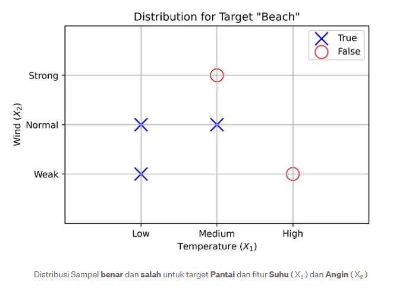

Probabilitas Diskrit Probabilitas Bayesian#
Ketika kita melihat algoritma terbimbing untuk Pembelajaran Mesin, Naive Bayes adalah salah satu dari banyak model pengklasifikasi yang ada. Model ini pada dasarnya didasarkan pada Teorema Bayes dan menggunakan asumsi “naif” bahwa semua fitur bersifat independen.
Dalam artikel ini, kita akan mengeksplorasi pengklasifikasi Naive Bayes yang diskret (semua fiturnya diskret) dan matematika yang mendasari model ini.
Asumsikan bahwa kita ingin membuat keputusan apakah kita harus pergi ke pantai atau tidak, berdasarkan dua fitur: \(X₁\) (Suhu) dan \(X₂\) (Angin). Fitur \(X₁\) dapat mengasumsikan tiga nilai diskret (rendah, sedang, tinggi), sementara fitur \(X₂\) dapat mengasumsikan tiga nilai diskret yang berbeda (lemah, normal, kuat). Untuk menyederhanakannya, kita akan menggunakan \(X₁\) sebagai singkatan untuk Suhu, dan \(X₂\) untuk Angin. Target Pantai kita akan disingkat menjadi \(B\).
Tabel di bawah ini berisi beberapa catatan fitur \(X₁\) , \(X₂\) , dan target \(B\). Yang terakhir dapat mengasumsikan nilai Boolean benar (pergi ke pantai) atau salah (jangan pergi ke pantai).
Suhu \((X₁)\) |
Angin \((X₂)\) |
Pantai \((B)\) |
|---|---|---|
Rendah \((L)\) |
Lemah \((W)\) |
Benar \((T)\) |
Tinggi \((H)\) |
Lemah \((W)\) |
Salah \((F)\) |
Sedang \((M)\) |
Kuat \((S)\) |
Salah \((F)\) |
Rendah \((L)\) |
Biasa \((N)\) |
Benar \((T)\) |
Sedang \((M)\) |
Biasa \((N)\) |
Benar \((T)\) |
Sasaran kami adalah, dengan mempertimbangkan sepasang fitur baru \((X₁, X₂)\) , menentukan target B ( benar atau salah ). Tentu saja contoh ini sangat disederhanakan, demi penjelasan. Jadi, kami akan berasumsi bahwa sepasang fitur baru tersebut belum direkam.
Secara sederhana, kita dapat mengatakan: jika suhu sedang (tidak tinggi, tidak rendah) dan angin lemah, haruskah kita pergi ke pantai atau tidak? Kita juga berasumsi bahwa kita memiliki skala sendiri untuk suhu dan angin, sehingga kita tahu persis apa arti masing-masing status tersebut.
Secara Matematika, kita mencari probabilitas tertinggi diantara dua hal berikut: probabilitas bahwa Pantai = benar , dengan asumsi bahwa Suhu = sedang & Angin = lemah ,
\(P(B = \text{T} \mid X_1 = \text{M}, X_2 = \text{W})\)
dan kemungkinan bahwa Pantai = salah , mengingat Suhu = sedang & Angin = lemah ,
\(P(B = \text{F} \mid X_1 = \text{M}, X_2 = \text{W})\)
Mana pun yang lebih besar akan secara otomatis memberi kita jawaban atas pertanyaan tersebut. Perhatikan bahwa model ini murni berdasarkan probabilitas.
Teorema Bayes#
Teorema Bayes memberi tahu kita cara menghitung probabilitas bersyarat dari suatu kejadian berdasarkan pengetahuan sebelumnya tentang kejadian tersebut. Dengan kata lain, Teorema Bayes memungkinkan kita menghitung probabilitas posterior berdasarkan probabilitas sebelumnya :
\(P(E|C) = \frac{P(C|E) \cdot P(E)}{P(C)}\)
Dalam persamaan ini, kita memiliki empat istilah berikut:
probabilitas posterior \(P(E | C)\) : probabilitas terjadinya peristiwa \(E\) , jika kondisi \(C\) benar;
probabilitas Prior \(P(E)\) : satu-satunya probabilitas terjadinya peristiwa \(E\) , yang merupakan pengetahuan sebelumnya tentang peristiwa itu sendiri;
Likelihood \(P(C | E)\) : probabilitas kondisi \(C\) benar, jika peristiwa E terjadi;
probabilitas marginal \(P(C)\) : satu-satunya probabilitas kondisi \(C\) yang benar.
Jika kita mengganti nama beberapa hal, kita dapat menggunakan Teorema Bayes dalam masalah kita. Karena kejadian kita didasarkan pada variabel target Pantai \(( B )\), mari kita ganti Kejadian \(E\) dengan Pantai \(B\) . Selain itu, kondisi kita (kita punya dua) diberikan oleh dua fitur, bernama Temperatur \(( X₁ )\) dan Angin \(( X₂ )\), jadi mari kita ganti Kondisi \(C\) dengan fitur \(X₁\) , \(X₂\) . Perlu diingat bahwa karena kita punya dua fitur dalam masalah ini, kita akan menggunakan semacam probabilitas gabungan . Semua modifikasi ini menghasilkan persamaan berikut:
\(P(B|X_1, X_2) = \frac{P(X_1, X_2|B) \cdot P(B)}{P(X_1, X_2)}\)
Jika membantu, Anda dapat menambahkan langkah ekstra di sini dan secara mental menyebut \(X = X_1, X_2\) , sehingga persamaan menjadi lebih mudah dipahami,
\(P(B|X) = \frac{P(X|B) \cdot P(B)}{P(X)}\)
dan Anda selalu dapat mengganti \(X\) dengan \(X₁, X₂.\)
Variabel Independen#
Langkah terbesar yang akan kita ambil sekarang adalah mengasumsikan bahwa fitur \(X₁\) dan \(X₂\) bersifat independen — maka dari itu dinamakan “Naif” sebagai bagian dari model pengklasifikasi kita (Naive Bayes). Mungkin naif untuk mengasumsikan bahwa variabel-variabel ini memang independen, tetapi itu akan menyederhanakan model kita (dan perhitungan kita) secara signifikan.
Jika kita menggunakan aturan produk untuk probabilitas gabungan , kita dapat menulis ulang probabilitas marginal menjadi
\(P(X) = P(X₁) . P(X₂).\)
Dengan cara yang sama, kita dapat menulis ulang kemungkinan sebagai
\(P(X₁, X₂ | B) = P(X₁| B) . P(X₂ | B).\)
Maka persamaan utama kita menjadi:
\(P(B|X_1, X_2) = \frac{P(X_1|B) \cdot P(X_2|B) \cdot P(B)}{P(X_1) \cdot P(X_2)}\)
Sebelum kita menyelami persamaan ini dan mulai memasukkan semua angka, mari kita lihat plot di bawah ini yang merangkum distribusi kelima sampel yang kita miliki dari tabel di atas.

Perhitungan Probabilitas#
Sekarang kita kembali ke permasalahan kita: diberikan sampel fitur baru \(( X₁, X₂ )\), kita ingin memprediksi target \(B\). Jika kita tetap menggunakan contoh dimana Suhu = sedang \(( X₁ = M )\) dan Angin = lemah \(( X₂ = W )\), kita harus menghitung
\(P(B=T|X_1=M, X_2=W) = \frac{P(X_1=M|B=T) \cdot P(X_2=W|B=T) \cdot P(B=T)}{P(X_1=M) \cdot P(X_2=W)}\)
Dan
\(P(B=F|X_1=M, X_2=W) = \frac{P(X_1=M|B=F) \cdot P(X_2=W|B=F) \cdot P(B=F)}{P(X_1=M) \cdot P(X_2=W)}\)
untuk mencari yang terbesar dari keduanya. Baiklah, mari kita hitung berdasarkan bagiannya.
Dalam teori probabilitas, istilah posterior, prior, dan likelihood adalah komponen inti dari Teorema Bayes. Teorema Bayes digunakan untuk memperbarui keyakinan (probabilitas) tentang suatu hipotesis berdasarkan data baru yang diamati. Berikut penjelasan dari masing-masing istilah:
Prior (P(H)) Prior adalah keyakinan awal kita terhadap suatu hipotesis \(H\) sebelum mendapatkan data atau bukti baru. Prior bisa didasarkan pada data historis, informasi sebelumnya, atau asumsi tertentu. Probabilitas sebelumnya, dalam statistik Bayesian, adalah probabilitas suatu kejadian sebelum data baru dikumpulkan.
Contoh: Jika kita ingin mengetahui kemungkinan seseorang sakit flu, prior bisa didasarkan pada prevalensi flu di populasi umum (misalnya, 5%).
Likelihood (P(D|H)) Likelihood adalah kemungkinan atau probabilitas untuk mendapatkan data \(D\), dengan asumsi bahwa hipotesis \(H\) benar. Likelihood menggambarkan seberapa cocok data yang kita miliki dengan hipotesis tertentu.
Contoh: Jika seseorang mengalami gejala seperti demam, likelihood adalah probabilitas bahwa seseorang dengan flu akan mengalami gejala tersebut.
Posterior (P(H|D)) Posterior adalah probabilitas hipotesis \(H\) setelah memperhitungkan data \(D\). Probabilitas posterior adalah salah satu besaran yang terlibat dalam aturan Bayes . Ini adalah probabilitas bersyarat dari suatu kejadian tertentu. Hal ini diperoleh dengan memperbarui probabilitas sebelumnya, yang ditetapkan pada peristiwa pertama sebelum mengamati peristiwa kedua. Posterior dihitung menggunakan Teorema Bayes:
\(P(H|D) = \frac{P(D|H) \cdot P(H)}{P(D)}\)
Dimana:
\(P(H|D)\): Posterior probability (probabilitas hipotesis setelah melihat data).
\(P(D|H)\): Likelihood (probabilitas data dengan asumsi hipotesis benar).
\(P(H)\): Prior (probabilitas awal hipotesis).
\(P(D)\): Probabilitas data secara keseluruhan (bisa dihitung dengan menjumlahkan semua kemungkinan).
Hubungan Antara Ketiganya
Prior: Apa yang kita percayai sebelum melihat data.
Likelihood: Seberapa cocok data dengan hipotesis tertentu.
Posterior: Apa yang kita percayai setelah memperbarui keyakinan dengan data.
Langkah-langkah Analisis dengan Prior, Likelihood, dan Posterior#
Prior \((P(S))\)
Probabilitas awal seseorang menderita penyakit, sebelum mengetahui hasil tes:
\(P(S) = 0.001\) (karena prevalensi penyakit adalah \(0.1%\))
Probabilitas seseorang tidak sakit \((𝑃(¬𝑆))\) adalah:
\(P(¬S)=1−P(S)=0.999.\)Likelihood \((P(T+|S) dan P(T+|\neg S))\)
Probabilitas mendapatkan hasil tes positif:Jika seseorang sakit \((P(T+∣S)): 0.99\) (sensitivitas).
Jika seseorang tidak sakit \((P(T+∣¬S)): 0.05\) (false positive rate).
Evidence \((P(T+))\)
Probabilitas bahwa hasil tes positif secara keseluruhan (tanpa memandang apakah seseorang sakit atau tidak):\(P(T+)=P(T+∣S)⋅P(S)+P(T+∣¬S)⋅P(¬S).\)
Substitusi nilai:
\(P(T+)=(0.99⋅0.001)+(0.05⋅0.999)=0.00099+0.04995=0.05094.\)
Posterior \((P(S|T+))\)
Probabilitas seseorang benar-benar sakit jika hasil tes positif, menggunakan Teorema Bayes:\(P(S|T+) = \frac{P(T+|S) \cdot P(S)}{P(T+)}\)
Substitusi nilai:
\(P(S|T+) = \frac{0.99 \cdot 0.001}{0.05094} \approx 0.0194 \quad \text{(sekitar 1.94%)}.\)
Analisis Data#
Bagaimana kemungkinan/probabilitas usia paruh baya tekanan darah sangat tinggi kemungkinan penyakit Hipertensi (H) atau Tidak (T)
No |
Usia |
Tekanan Darah |
Penyakit H/T |
|---|---|---|---|
1 |
Muda |
Normal |
T |
2 |
Muda |
Tinggi |
T |
3 |
Paruh Baya |
Normal |
T |
4 |
Paruh Baya |
Tinggi |
H |
5 |
Tua |
Normal |
H |
6 |
Tua |
Sangat Tinggi |
H |
7 |
Muda |
Normal |
T |
8 |
Tua |
Tinggi |
H |
Penyelesaian \(P(H|X) = \frac{P(X|H) \cdot P(H)}{P(X)}\)
Dimana:
\(P(H∣X)\): Probabilitas bahwa seseorang memiliki hipertensi \((H)\), mengingat usia paruh baya dan tekanan darah sangat tinggi.
\(P(X∣H)\): Probabilitas fitur \(X\) (usia paruh baya dan tekanan darah sangat tinggi) terjadi jika seseorang memiliki hipertensi.
\(P(H)\): Probabilitas prior dari hipertensi di dataset.
\(P(X)\): Probabilitas dari fitur \(X\) di seluruh dataset.
langkah-angkahnya
Identifikasi probabilitas prior:
Probabilitas \(P(H)\): Rasio jumlah data dengan hipertensi terhadap total data.
Probabilitas \(P(T)\): Rasio jumlah data tanpa hipertensi terhadap total data.
Probabilitas likelihood \(P(X∣H)\):
Hitung probabilitas kondisi usia paruh baya dan tekanan darah sangat tinggi dalam subset data dengan hipertensi \(H\).
Probabilitas \(P(X)\):
Probabilitas usia paruh baya dan tekanan darah sangat tinggi di seluruh dataset.
Analisis Dataset
Dataset diberikan:
Usia: Muda, Paruh Baya, Tua
Tekanan darah: Normal, Tinggi, Sangat Tinggi
Penyakit: H (hipertensi), T (tidak hipertensi)
Data dihitung: Dari tabel: Total data = 8
\(H\) = 4 (baris dengan “H”: No. 3, 4, 6, 8)
\(T\) = 4 (baris dengan “T”: No. 1, 2, 5, 7)
Langkah Hitung
Probabilitas prior:
\(P(H) = \frac{\text{Jumlah H}}{\text{Total data}} = \frac{4}{8} = 0.5\)
\(P(T) = \frac{\text{Jumlah T}}{\text{Total data}} = \frac{4}{8} = 0.5\)
Likelihood \(P(X∣H)\):
Usia = Paruh Baya dalam subset \(H\): Dari baris (3, 4, 6, 8), hanya baris 4 yang “Paruh Baya”.
\(P({\text{Paruh Baya}}|H) = \frac{4}{8} = 0.5\)
Tekanan darah = Sangat Tinggi dalam subset \(H\): Dari baris (3, 4, 6, 8), hanya baris 6 yang “Sangat Tinggi”.
\(P({\text{Sangat Tinggi}}|H) = \frac{4}{8} = 0.5\)
Karena Naive Bayes mengasumsikan independensi, maka:
\(P(X|H) = P(\text{Paruh Baya}|H) \cdot P(\text{Sangat Tinggi}|H) = 0.25 \cdot 0.25 = 0.0625\)
Likelihood \(P(X∣T)\):
Usia = Paruh Baya dalam subset \(T\): Dari baris (1, 2, 5, 7), tidak ada yang “Paruh Baya”.
\(P({\text{Paruh Baya}}|T) = 0\)
Karena salah satu faktor \(P(X∣T)=0\), maka:
\(P(X∣T)=0\)
Probabilitas \(P(X)\):
Usia = Paruh Baya dan Tekanan Darah = Sangat Tinggi tidak pernah muncul bersama dalam seluruh dataset.
\(P(X)=0\)
Probabilitas Posterior:
Untuk \(P(H∣X)\), karena \(P(X)=0\), probabilitas tidak bisa dihitung langsung.
Kesimpulannya Berdasarkan dataset, probabilitas usia paruh baya dengan tekanan darah sangat tinggi tidak dapat dihitung menggunakan Naive Bayes karena tidak ada data terkait kombinasi ini dalam tabel \((P(X)=0)\).
Rumus Naive Bayes#
Hitunglah probabilitas Hipertensi terhadapa usia paruh baya tekanan darah sangat tinggi
Hitunglah probabilitas Tidak Hipertensi terhadap usia paruh baya tekanan darah sangat tinggi